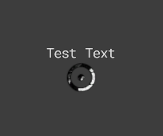

Module: task_location_point
Documentation last edited: October 23, 2025 at 14:33 UTC
Description

Have you seen these little fuckers when you press Tab in game? They are supposed to be waypoints to your success. You follow them and get exactly where you need to be. As if the divine hand is ruling over your will to help you in your sacred mission. That's what it is and that's what this module is about.
"res://modules/task_location_point/assets/scene/task_point.tscn"
contains the scene with this task point, contains all the stuff you need.
Usage example
# Add the task point with all configured parameters
TaskPoints.add_task_point(
"test0",
"Very damn test 0",
global_position,
false, # force_to_show
false, # ignore_chunks
"point_arrow.png"
)
# Handle task point removal
TaskPoints.remove_task_point(key)
Or just use the damn
ST_TaskPoint
General Information
Root directories list
assets, docs, src
Nodes
Classes
None
Resources
None
Other Scripts
None